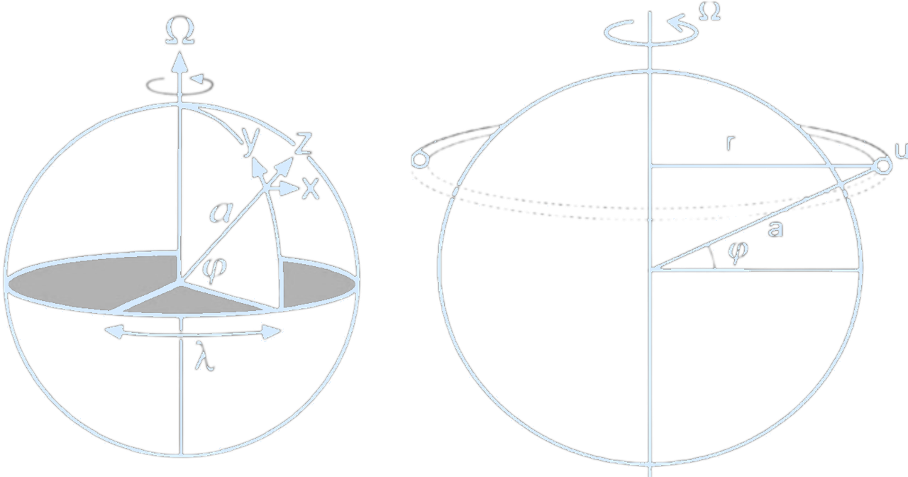
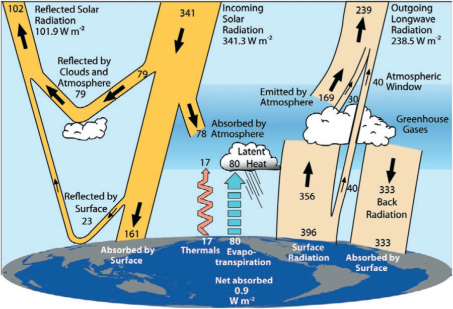

Project 5 – Hadley Cell
Homework 5: Testing Hadley Cell Width Theory in an Atmospheric Climate Model
This week we will test the theory of Hadley Cell Width in the Speedy Aquaplanet Model
Note: You need to install pySPEEDY-aqua each time we use an erda session, or if you manage to run it locally on your laptop or home computer, then only once.
In terminal:
1. Create the environment with Python 3.9 and core tools
conda create -n pyspeedy python=3.9 pip numpy=1.23 setuptools=59.5 -yconda activate pyspeedypip install jinja2 ipykernelpip install git+https://github.com/guidov/pySPEEDY-aqua.gitpython -m ipykernel install --user --name pyspeedy --display-name "Python (pyspeedy)"Python (pyspeedy) kernal (you may need to wait a few minutes)Load modules that we will use for this project:
!which python
!python -V
import pyspeedyaqua/opt/conda/bin/python Python 3.12.7
import pyspeedyaqua
print("pyspeedyaqua imported successfully!")
print(dir(pyspeedyaqua)) # Show available submodules/functionspyspeedyaqua imported successfully! ['DEFAULT_OUTPUT_VARS', 'MODEL_STATE_DEF', 'PACKAGE_DATA_DIR', 'Path', 'Speedy', 'SpeedyEns', '__builtins__', '__cached__', '__doc__', '__file__', '__loader__', '__name__', '__package__', '__path__', '__spec__', '_speedy', 'callbacks', 'error_codes', 'example_bc_file', 'example_sst_anomaly_file', 'speedy', 'speedy_driver']
pip show pyspeedyaquaName: pyspeedyaqua Version: 0.2.0 Summary: Python interface for the SPEEDY model (Using aquaplanet boundary conditions). Home-page: https://github.com/guidov/pySPEEDY-aqua Author: Andrés Pérez Hortal, Sam Hatfield, Fred Kucharski, Franco Molteni Author-email: License: UNKNOWN Location: /opt/conda/envs/pyspeedy/lib/python3.9/site-packages Requires: netCDF4, numpy, xarray Required-by: Note: you may need to restart the kernel to use updated packages.
pip install numpy xarray scipy matplotlib cartopy# Standard modules
import numpy as np
import xarray as xr
from datetime import datetime
# Numerical integration using trapezoidal rule (scipy >=1.10.0 includes cumtrapz here)
from scipy.integrate import cumtrapz
# Plotting
import matplotlib
import matplotlib.pyplot as plt
# Map projections for geospatial data
import cartopy.crs as ccrs
from cartopy.feature import OCEAN
from cartopy.util import add_cyclic_point
# The Speedy Aquaplanet Model
from pyspeedyaqua import Speedy, SpeedyEns
from pyspeedyaqua.callbacks import DiagnosticCheck, ModelCheckpoint, XarrayExporterHelper Functions for the Assignment
def pres2alt(pressure):
'''
Determine altitude from site pressure.
Parameters
----------
pressure : numeric
Atmospheric pressure. [Pa]
Returns
-------
altitude : numeric
Altitude above sea level. [m]
Notes
------
The following assumptions are made
============================ ================
Parameter Value
============================ ================
Base pressure 101325 Pa
Temperature at zero altitude 288.15 K
Gravitational acceleration 9.80665 m/s^2
Lapse rate -6.5E-3 K/m
Gas constant for air 287.053 J/(kg K)
Relative Humidity 0%
============================ ================
References
-----------
.. [1] "A Quick Derivation relating altitude to air pressure" from
Portland State Aerospace Society, Version 1.03, 12/22/2004.
'''
alt = 44331.5 - 4946.62 * pressure ** (0.190263)
return alt(Schematic illustration of dynamical processes occurring on a generic terrestrial exoplanet. These include baroclinic eddies, Rossby waves, and eddy-driven jet streams in the extratropics, and Hadley circulations, large-scale Kelvin
and Rossby waves, and (in some cases) equatorial superrotation in the tropics. The “X” at the equator marks the substellar
point, which will be fixed in longitude on synchronously rotating planets. Cloud formation, while complex, will likely
be preferred in regions of mean ascent, including the rising branch of the Hadley circulation, within baroclinic eddies,
and—on synchronously rotating planets—in regions of ascent on the dayside.
Credit: Showman, Adam P., Robin D. Wordsworth, Timothy M. Merlis, and Yohai Kaspi. 2013.
"Atmospheric Circulation of Terrestrial Exoplanets." Pre-print.)
Let’s start from the general continuity equation for incompressible flow, and work step-by-step to arrive at the zonal mean continuity equation in pressure coordinates and finally the streamfunction used for meridional overturning circulation in the atmosphere.
General Continuity Equation for Incompressible Flow
$$ \nabla \cdot \mathbf{u} = \underbrace{\frac{\partial u}{\partial x}}_{\text{$u$: zonal (east-west) velocity}} + \underbrace{\frac{\partial v}{\partial y}}_{\text{$v$: meridional (north-south) velocity}} + \underbrace{\frac{\partial w}{\partial z}}_{\text{$w$: vertical velocity (in height coordinates $z$)}} = 0 $$Zonal Averaging
We average over the longitude (x) to get the zonal-mean equation. $$ \left[ \frac{\partial u}{\partial x} \right] + \frac{\partial \left[ v \right]}{\partial y} + \frac{\partial \left[ w \right]}{\partial z} = 0 $$ But by definition of the zonal average: $$ \left[ \frac{\partial u}{\partial x} \right] = \frac{\partial \left[ u \right]}{\partial x} = 0 \quad \text{(since } [u] \text{ is zonally averaged)} $$ So the zonal mean continuity equation becomes: $$ \frac{\partial \left[ v \right]}{\partial y} + \frac{\partial \left[ w \right]}{\partial z} = 0 $$ This is the mass continuity equation in the meridional plane (y-z)Transform to Spherical Coordinates
Let’s now switch to spherical coordinates:$\varphi$: latitude
$a$: Earth radius
$y = a \varphi \Rightarrow \partial y = a \, d\varphi$ 
(At latitude ϕ, longitude λ, we define a local coordinate system such that the three coordinates in the (x, y, z) directions point (eastward, northward, upward):
$
dx = a \cos(\phi) d\lambda,
dy = a d\phi,
dz = dz,
$
where $a$ is the radius of the Earth.
The velocity is $\mathbf{u} = (u, v, w)$ in the directions (x, y, z).Angular momentum per unit mass at the equator is the sum of Earth’s angular momentum and the wind in the zonal direction in the atmosphere: $A = \Omega r^2 + ru$, where $a$ is Earth’s radius, and $r = a \cos(\phi)$.
Hence, $A = \Omega a^2 \cos^2 \phi + u a \cos \phi$. Under the thin shell approximation, $a +$ Earth’s atmosphere can be approximated as $a$. $\Omega = \frac{2\pi}{24h}$, $r$ represents the distance from the rotational axis, $u$ is the zonal wind, $\phi$ is the latitude, and $a$ is Earth’s radius.
Credit: Marshall & Plumb, 2008. Domeisen, The Global Atmospheric Circulation, 2019.)
Then, the horizontal divergence becomes:
$$
\frac{\partial \left[ v \right]}{\partial y} \to \frac{1}{a \cos \varphi} \frac{\partial \left( \left[ v \right] \cos \varphi \right)}{\partial \varphi}
$$
So the spherical form of the zonal-mean continuity equation in height coordinates is:
$$
\frac{1}{a \cos \varphi} \frac{\partial \left( \left[ v \right] \cos \varphi \right)}{\partial \varphi} + \frac{\partial \left[ w \right]}{\partial z} = 0
$$
Switch to Pressure Coordinates
The hydrostatic equation (which is an excellent approximation in large-scale atmospheric flow) states: $$ \underbrace{dp}_{\substack{\text{change in} \\ \text{pressure (Pa)}}} = -\, \underbrace{\rho}_{\substack{\text{air density} \\ \text{(kg/m$^3$)}}} \, \underbrace{g}_{\substack{\text{gravitational acceleration}}}\, \underbrace{dz}_{\substack{\text{change in height (m)}}} $$ A derivative with respect to height is proportional to a negative derivative with respect to pressure. This can also be written in differential form as: $$ dp = -\rho g \, dz $$ The goal is to express $\frac{\partial}{\partial z}$ in terms of $\frac{\partial}{\partial p}$ We want to rewrite vertical derivatives like $\frac{\partial \overline{w}}{\partial z}$ in terms of $\frac{\partial}{\partial p}$, using the relationship $dp = -\rho g \, dz$. First, solve for $dz$: $$ dz = -\frac{1}{\rho g} \, dp $$ Apply the chain rule to change derivatives from $z$ to $p$: $$ \frac{\partial}{\partial z} = \frac{dp}{dz} \cdot \frac{\partial}{\partial p} = -\rho g \cdot \frac{\partial}{\partial p} $$ $$ \therefore \boxed{ \frac{\partial}{\partial z} = -\rho g \, \frac{\partial}{\partial p} } $$ Then, the vertical velocity in pressure coordinates is defined as: $$ \omega = \frac{dp}{dt} \quad \text{(units: Pa/s)} $$ In height coordinates, vertical velocity is: $$ w = \frac{dz}{dt} \quad \text{(units: m/s)} $$ Differentiate both sides of: $$ dp = -\rho g \, dz $$ with respect to time $t$: $$ \frac{dp}{dt} = -\rho g \cdot \frac{dz}{dt} $$ Now rearrange: $$ \frac{dz}{dt} = -\frac{1}{\rho g} \cdot \frac{dp}{dt} \Rightarrow w = -\frac{\omega}{\rho g} $$ Thus: $$ \boxed{ w = \frac{dz}{dt} = -\frac{\omega}{\rho g} } $$ The continuity equation in pressure coordinates becomes: $$ \frac{1}{a \cos \varphi} \frac{\partial \left( \left[ \overline{v} \right] \cos \varphi \right)}{\partial \varphi} + \frac{\partial \left[ \overline{\omega} \right]}{\partial p} = 0 $$Define the Streamfunction $\Psi(\varphi, p)$
For 2D incompressible flow in Cartesian coordinates $(y, z)$, the continuity equation is: $$ \frac{\partial v}{\partial y} + \frac{\partial w}{\partial z} = 0 $$ We can define a streamfunction $\psi(y, z)$ such that this equation is automatically satisfied by: $$ v = \frac{\partial \psi}{\partial z}, \quad w = -\frac{\partial \psi}{\partial y} $$ Why does this work? Plug these into the continuity equation: $$ \frac{\partial v}{\partial y} + \frac{\partial w}{\partial z} = \frac{\partial^2 \psi}{\partial y \partial z} - \frac{\partial^2 \psi}{\partial z \partial y} = 0 $$ These definitions automatically conserve mass. We now convert to spherical coordinates (latitude and pressure):$y \rightarrow \varphi$ (latitude), using $y = a \varphi$
$z \rightarrow p$ (pressure, via hydrostatic relation)
$$ \left[ \overline{v} \right] = \frac{g}{2\pi a \cos \varphi} \frac{\partial \Psi}{\partial p} \quad \text{(meridional velocity)} $$ $$ \left[ \overline{\omega} \right] = -\frac{g}{2\pi a^2 \cos \varphi} \frac{\partial \Psi}{\partial \varphi} \quad \text{(vertical pressure velocity)} $$
Compute $\Psi(\varphi, p)$ from \([\overline{v}]\)
Given: $$ \boxed{ \overline{v} = \frac{g}{2\pi a \cos\varphi} \frac{\partial \Psi}{\partial p} } $$ This means that $\overline{v}$ is the partial derivative of $\Psi$ with respect to $p$, up to a known constant. Multiply both sides by $\frac{2\pi a \cos\varphi}{g}$: $$ \frac{\partial \Psi}{\partial p} = \frac{2\pi a \cos\varphi}{g} \cdot \overline{v}(\varphi, p) $$ Now integrate from a reference pressure level $p_{\text{top}}$ to a level $p$: $$ \int_{p_{\text{top}}}^{p} \frac{\partial \Psi}{\partial p'} \, dp' = \int_{p_{\text{top}}}^{p} \frac{2\pi a \cos\varphi}{g} \cdot \overline{v}(\varphi, p') \, dp' $$ The left-hand side is just $\Psi(\varphi, p) - \Psi(\varphi, p_{\text{top}})$. So: $$ \Psi(\varphi, p) - \Psi(\varphi, p_{\text{top}}) = \frac{2\pi a \cos\varphi}{g} \int_{p_{\text{top}}}^{p} \overline{v}(\varphi, p') \, dp' $$ It’s conventional to set the streamfunction to zero at the top of the atmosphere: $$ \Psi(\varphi, p_{\text{top}}) = 0 $$ Then $\Psi(\varphi, p) - \Psi(\varphi, p_{\text{top}}) = \frac{2\pi a \cos\varphi}{g} \int_{p_{\text{top}}}^{p} \overline{v}(\varphi, p') \, dp'$ becomes: $$ \boxed{ \Psi(\varphi, p) = \frac{2\pi a \cos\varphi}{g} \int_{p_{\text{top}}}^{p} \overline{v}(\varphi, p') \, dp' } $$def streamfunc(zmodvvel, zmodplev, zmodlat, axis_to_integrate = 0):
"""
Calculate the streamfunction from v velocity.
Args:
zmodvvel: An xarray or numpy array containing v velocity data (levels, latitudes).
zmodplev: An xarray or numpy array containing pressure level data (levels, latitudes).
zmodlat: An xarray or numpy array containing latitude data .
axis_to_integrate: Axis over which to integrate. If the dimensions are time, lev, lat,
set axis_to_integrate=2. Defaults to 0.
Returns:
psi: Streamfunction calculated from v velocity, converted to Sverdrups.
"""
# Integrate v velocity over pressure levels along the specified axis.
integral = cumtrapz(zmodvvel, zmodplev, axis=axis_to_integrate, initial=0)
# Create a new array by multiplying v velocity by 0 and adding the integral.
psi = zmodvvel * 0.0 + integral # there are better ways to initialize a new array.
# Calculate the factor using latitude information.
a = 6371000.0 # radius of the earth in (m)
g = 9.81 # gravity (m/s^2)
fac = 2.0 * np.pi * a * np.cos(np.deg2rad(zmodlat)) / 9.81
# Update the streamfunction with the factor.
psi = psi * fac
# Convert the streamfunction to Sverdrups (Sv).
psi = psi / 1e9
return psipres2alt function will help with plotting pressure vertical axis in height coordinates
pres_profile = np.linspace(10000,100000,11) # needs to be in Pascals
height_profile = pres2alt(pres_profile)
height_profile # in meters
array([15797.63848758, 12091.35061355, 9622.81359054, 7732.57631275,
6184.63587745, 4865.40331671, 3710.85926943, 2681.12207669,
1749.55309629, 897.41854125, 111.01015569])
This is some real model data to show how the streamfunction is calculated and ploted to save time on the assignment.
lat_test = np.array([-87.216515 , -83.50514 , -79.79381 , -76.08247 , -72.37113 , -68.6598 , -64.94845 , -61.23711 ,
-57.525764 , -53.81443 , -50.10309 , -46.39175 , -42.680412 , -38.969067 , -35.25773 , -31.546385 ,
-27.835052 , -24.123709 , -20.412367 , -16.70103 , -12.989685 , -9.278345 , -5.5670047, -1.8556641,
1.8556641, 5.5670047, 9.278345 , 12.989685 , 16.70103 , 20.412367 , 24.123709 , 27.835052 ,
31.546385 , 35.25773 , 38.969067 , 42.680412 , 46.39175 , 50.10309 , 53.81443 , 57.525764 ,
61.23711 , 64.94845 , 68.6598 , 72.37113 , 76.08247 , 79.79381 , 83.50514 , 87.216515 ]);vvel_test = np.array([[ 2.47668382e-02, 4.95643802e-02, 5.81577532e-02, 1.45298801e-02, -5.47213182e-02, -5.54912686e-02, -2.28482913e-02, -1.73636395e-02,
1.92252267e-02, 4.10654880e-02, -1.63202025e-02, -3.81199531e-02, -5.91488592e-02, -1.00754462e-01, 1.93029478e-01, 6.15718424e-01,
2.95161575e-01, -4.22568738e-01, -3.22495759e-01, 4.39862192e-01, 1.47769558e+00, 3.42451143e+00, 4.84887934e+00, 2.52999949e+00,
-2.40655589e+00, -4.84191799e+00, -3.44501996e+00, -1.43028796e+00, -4.08730924e-01, 2.55904853e-01, 3.50775450e-01, -2.49875486e-01,
-4.84227270e-01, -1.07368112e-01, 8.26763213e-02, 7.75755849e-03, 2.67568901e-02, 2.23145131e-02, -5.39287478e-02, -2.34681573e-02,
3.06858793e-02, 5.71325235e-03, 2.64523830e-03, 1.67699866e-02, -2.31886897e-02, -5.34676425e-02, -2.95492653e-02, -3.86544620e-03],
[ 3.21759284e-02, 4.79086861e-02, 3.54018137e-02, 1.33776257e-03, -4.77374047e-02, -7.19113126e-02, -5.00482172e-02, -6.93723233e-03,
2.21501272e-02, 5.45633677e-03, -3.03077325e-02, -3.51979025e-02, -6.34879693e-02, -8.65347907e-02, 1.01391278e-01, 3.38728964e-01,
1.33172348e-01, -3.02221090e-01, -2.11046755e-01, 3.47246677e-01, 7.72506535e-01, 1.08101547e+00, 1.25689733e+00, 6.78657651e-01,
-5.15561640e-01, -1.21178019e+00, -1.09059918e+00, -7.44892955e-01, -3.28666419e-01, 1.61027968e-01, 2.52193362e-01, -8.97630975e-02,
-2.28771523e-01, -2.83681341e-02, 8.02518129e-02, 2.77745202e-02, 1.96578875e-02, 2.64327582e-02, -1.12856664e-02, -1.42565928e-02,
2.09424738e-02, 3.36006843e-02, 2.90304460e-02, 1.90617349e-02, -4.07511834e-03, -2.28064768e-02, -2.23195720e-02, -1.07543617e-02],
[ 4.08578105e-02, 5.08911125e-02, 2.14360710e-02, -4.62792069e-03, -3.47508937e-02, -7.34576210e-02, -6.40365779e-02, -3.92054161e-03,
1.74511373e-02, -9.54462867e-03, -1.31327128e-02, -2.46767160e-02, -8.57761204e-02, -6.49095625e-02, 1.04931630e-01, 1.85094565e-01,
-6.96900766e-03, -1.64345890e-01, 1.43073291e-01, 6.16226733e-01, 2.69068599e-01, -1.12210274e+00, -2.08794332e+00, -1.11411309e+00,
1.02317774e+00, 2.02158952e+00, 1.09677577e+00, -2.59467959e-01, -5.98596513e-01, -1.35966912e-01, 1.69875816e-01, 2.64109094e-02,
-1.55401751e-01, -7.96462819e-02, 7.66693503e-02, 7.87851140e-02, 9.05052992e-04, -7.48119596e-03, 1.26761170e-02, 1.09525397e-04,
6.59125950e-03, 4.02439684e-02, 3.79218198e-02, 7.45266443e-03, -2.29987944e-03, -5.64920995e-03, -2.34503504e-02, -2.29640808e-02],
[ 5.36413752e-02, 4.56045121e-02, 7.99892005e-03, 3.03166709e-03, -3.24745215e-02, -7.39846304e-02, -4.45297398e-02, -6.14352943e-03,
3.84857552e-03, 3.29606794e-02, 5.79470163e-03, -9.50671136e-02, -5.99682480e-02, 6.64733350e-02, -6.03738204e-02, -2.63424039e-01,
3.07071134e-02, 5.64011753e-01, 4.73874927e-01, 1.59969926e-02, 5.12425780e-01, 2.09003115e+00, 2.90985107e+00, 1.46758878e+00,
-1.24367440e+00, -2.76623034e+00, -2.06249762e+00, -5.36225975e-01, 1.86163019e-02, -3.66442233e-01, -4.75754678e-01, -2.51063183e-02,
2.23736465e-01, 4.43845578e-02, -4.82201427e-02, 6.65973425e-02, 6.71259388e-02, -3.13568860e-02, -2.53002346e-02, 9.78699047e-03,
-6.88947039e-03, 1.42202675e-02, 4.27718014e-02, 2.15905905e-03, -2.20489521e-02, -6.45630481e-03, -3.65139879e-02, -4.99644019e-02],
[ 7.08381981e-02, 3.32167372e-02, -1.97286569e-02, 2.10164208e-02, 5.21147018e-03, -4.70140986e-02, -8.04680772e-03, 2.54031066e-02,
1.57610103e-02, 4.22815569e-02, -5.39658475e-04, -9.89987478e-02, -1.33479228e-02, 1.03691779e-01, -6.22826442e-02, -1.92842349e-01,
8.92123729e-02, 3.83671165e-01, 1.65473193e-01, -6.56588852e-01, -2.17112565e+00, -4.00496626e+00, -4.46716547e+00, -2.06871152e+00,
1.94847512e+00, 4.44210625e+00, 4.01075602e+00, 2.15670919e+00, 6.95127249e-01, -7.40031749e-02, -3.83023292e-01, -2.33007774e-01,
3.86397392e-02, 1.50030162e-02, -8.23867694e-02, 1.48943244e-02, 6.68991357e-02, -2.82239802e-02, -5.89096881e-02, -4.19966094e-02,
-6.06044605e-02, -1.27466200e-02, 3.92298140e-02, -2.31199637e-02, -5.35820648e-02, -1.80128869e-02, -7.11762905e-02, -9.45502594e-02],
[-1.54572323e-01, -5.92616759e-02, 5.85394502e-02, -3.45130488e-02, 9.75878723e-03, 1.18414290e-01, 3.91986109e-02, 2.65560690e-02,
1.01833768e-01, 2.36105733e-02, -1.49186915e-02, 4.19062637e-02, -4.01958153e-02, -5.21921776e-02, 1.04486831e-01, 8.43731835e-02,
-2.08271760e-02, -1.44156978e-01, -6.24697924e-01, -8.34239006e-01, -6.23250566e-02, 4.60815817e-01, -1.17077701e-01, -3.39870512e-01,
2.33964100e-01, 1.17374875e-01, -4.35570776e-01, 2.89400406e-02, 8.25466037e-01, 7.14669168e-01, 2.40603626e-01, 8.26313812e-03,
-1.83551833e-01, -1.87991813e-01, 3.58236916e-02, 5.92348650e-02, -4.63583209e-02, -3.87438089e-02, -1.10848173e-01, -1.87413216e-01,
-6.75022677e-02, -1.34460460e-02, -6.37425557e-02, 3.68361222e-03, -2.60860212e-02, -1.75094739e-01, -6.77202269e-02, 8.08281153e-02],
[-6.69614449e-02, -1.01910211e-01, -7.51956999e-02, -1.70211457e-02, 6.21995814e-02, 1.27038375e-01, 1.32545903e-01, 9.82311219e-02,
7.47217983e-02, 7.34559298e-02, 7.38578290e-02, 4.54660691e-02, -2.63552144e-02, -9.95290056e-02, -1.17117837e-01, -9.83527526e-02,
-1.12036198e-01, -1.67105496e-01, -1.97994187e-01, -1.64326742e-01, -1.17842317e-01, -1.24418050e-01, -1.46908462e-01, -9.27182809e-02,
4.16911766e-02, 1.68930128e-01, 2.22241834e-01, 2.10309401e-01, 2.04996556e-01, 2.60494262e-01, 3.08622569e-01, 2.38499328e-01,
8.99132416e-02, 4.90555353e-03, 1.67079754e-02, 4.00602557e-02, 1.14102021e-03, -1.03793867e-01, -1.95595756e-01, -1.82459503e-01,
-9.35480818e-02, -2.87652314e-02, -6.40385691e-03, -1.10839643e-02, -6.25808612e-02, -1.17750838e-01, -9.86953676e-02, -3.64413038e-02],
[ 1.56761501e-02, 1.90396775e-02, -1.29919490e-02, -7.57989511e-02, -1.36177257e-01, -1.56091422e-01, -1.27766728e-01, -8.64436850e-02,
-9.82407779e-02, -2.09691226e-01, -3.71645182e-01, -4.55421001e-01, -3.89974207e-01, -2.30874285e-01, -8.66982788e-02, -5.42048030e-02,
-1.71732470e-01, -3.31149936e-01, -3.39432061e-01, -1.68168098e-01, -1.23349030e-03, 3.11501231e-02, -1.23661058e-03, 8.17033742e-03,
4.23675440e-02, 2.10224707e-02, -3.78881656e-02, 3.80060612e-03, 1.93916693e-01, 3.47208291e-01, 2.86456466e-01, 1.23377219e-01,
8.20060819e-02, 1.73726618e-01, 2.62418061e-01, 2.97235072e-01, 2.98196912e-01, 2.57753253e-01, 1.81972280e-01, 1.20243169e-01,
1.00634299e-01, 1.05495997e-01, 1.09625228e-01, 1.01057850e-01, 8.22830573e-02, 6.51914179e-02, 5.12244627e-02, 2.70697717e-02]])
print(vvel_test.shape)(8, 48)
# tile the pressure levels so that they are same dimensions as the velocity (levels, latituudes)
# this is necessary for the vertical integration of the velocity
plevs2D_test = np.tile(plevs_test, (lat_test.shape[0], 1)).T
plevs2D_test.shape(8, 48)
from scipy.integrate import cumulative_trapezoid
# Need to be updated on Absalon #
# scipy.integrate.cumtrapz in the previous code is now deprecated and will be removed in SciPy 1.14.
# Replace it with from scipy.integrate import cumulative_trapezoid
# Then something like integral = cumulative_trapezoid(vvel, plevs, axis=axis_to_integrate, initial=0)import numpy as np
from scipy.integrate import cumulative_trapezoid
def streamfunc(vvel, plevs, lats, axis_to_integrate=0):
"""
Compute the meridional mass streamfunction Ψ from zonal-mean meridional wind [v].
Parameters:
-----------
vvel : np.ndarray
Zonal-mean meridional wind field, shape (levels, latitudes)
plevs : np.ndarray
Pressure levels in Pa, shape must match vvel along vertical
lats : np.ndarray
Latitudes in degrees, 1D array matching vvel shape
axis_to_integrate : int
Axis along which pressure varies (default 0)
Returns:
--------
psi : np.ndarray
Streamfunction in units of Sverdrup (1 Sv = 1e9 kg/s)
"""
# Ensure inputs are arrays
vvel = np.asarray(vvel)
plevs = np.asarray(plevs)
lats = np.asarray(lats)
# Perform vertical integration of vvel over pressure using trapezoidal rule
integral = cumulative_trapezoid(vvel, plevs, axis=axis_to_integrate, initial=0)
# Constants
a = 6.371e6 # Earth's radius in meters
g = 9.81 # Gravity in m/s^2
# Compute cosine of latitudes (broadcasted to shape of integral)
cosphi = np.cos(np.deg2rad(lats))
fac = 2 * np.pi * a * cosphi / g # shape: (lat,)
# Broadcast factor to match integral shape
psi = integral * fac[np.newaxis, :]
# Convert to Sverdrup (1 Sv = 1e9 kg/s)
psi /= 1e9
return psidef plot_streamfunc(
ax,
lats,
plev,
sf,
clevels=np.linspace(-200,200,21),
colormap=plt.cm.bwr,
colorbar=True):
"""
This function plots the stream function.
It takes in various parameters, including axis, latitudes, pressure level,
stream function, color levels, colormap, and a boolean to decide
whether to show the color bar.
:param ax: matplotlib axes to plot on.
:param lats: Latitude coordinates.
:param plev: Pressure level.
:param sf: Stream function values.
:param clevels: Color levels for the contour plot. Default is np.linspace(-200,200,21).
:param colormap: Color map for the contour plot. Default is plt.cm.bwr.
:param colorbar: Boolean to decide if the color bar is shown. Default is True.
:return: Returns the axes of the plot.
"""
axr = ax.twinx()
# No conversion required; latitudes already in degrees.
latdeg = lats
# Change pressure units from Pa to millibar.
pressures = plev / 100.
# Create contour plot.
pl = ax.contourf(latdeg, pressures, sf, levels=clevels, cmap=colormap, extend='both')
# Contour the zero level.
ax.contour(latdeg, pressures, sf, levels=[0], colors='k', linewidths=0.5)
# Invert the y-axis for correct pressure plot.
ax.invert_yaxis()
# Specify the pressure ticks for y-axis.
press_ticks = [1000.0, 850.0, 700.0, 500.0, 200.0, 100.0]
ax.set_yticks(press_ticks)
# Set the latitude range to plot.
ax.set_xlim(-40,40)
# Height labels on the right.
axr.set_yticks(press_ticks)
axr.set_yticklabels(np.round(pres2alt(np.array(press_ticks)*100.)/1000.,1))
axr.invert_yaxis()
# Set labels for the axes.
ax.set_xlabel('Latitude ($\degree$)')
ax.set_ylabel('Pressure (mb)')
axr.set_ylabel('Height (km)')
# Plot the colorbar if the colorbar parameter is True.
if colorbar:
cb = plt.colorbar(pl, orientation="vertical", pad=0.12)
varlab = "Streamfunction"
units = "[Sv]"
cb.set_label(label=varlab + ' ' + units, size='large', weight='bold')
cb.ax.tick_params(labelsize='large')
ax.set_title("")
return ax, axrsf_test = streamfunc(vvel_test, plevs2D_test, lat_test, axis_to_integrate=0)fig = plt.figure(figsize=(8,4))
# define a subplot
ax0 = plt.subplot(111)
# call the streamplot function
ax0, ax0r = plot_streamfunc(ax0, lat_test, plevs_test, sf_test)You can use an axes grid like this to plot out all your streamfunctions together later if you need to
fig, ax = plt.subplots(4, 3, figsize=(16, 12))
for i in range(4):
for j in range(3):
call your plotting function with 'ax' as an input
Running a Forecast
This example shows how to run forecasts using theSpeedyEns class.
For this example, we will execute these steps:
- Create models starting from a reference atmosphere. The same boundary conditions are used for each member
- Perturb the initial temperature field with an uncorrelated gaussian noise with a 0.1$^\circ$K standard deviation.
They are only used to display how to use the
SpeedyEnsclass. - Run the forecast for 2 months (we can also specify a "spinup" period, "sp", where the results from the first "sp" months are discarded). This has to be determined so we will just use no spinup period.
Run the forecast (This is a template of how to run the model and change an initial condition or boundary condition)
Let's run the forecast, keeping the output once a day (except during the spinup period). To store the forecast in memory, we will use the
ModelCheckpoint callback function.
We can use the %%time magic to get an idea how fast the model runs.
%%time
from datetime import datetime
import numpy as np
# Definitions
start_date = datetime(1980, 1, 1)
end_date = datetime(1980, 1, 31)
spinup_date = datetime(1980, 1, 1)
# Create a single instance of the Speedy model (no ensemble)
model = Speedy(
start_date=start_date,
end_date=end_date,
)
# Set default boundary conditions
model.set_bc()
# Uncomment this to use aquaplanet conditions instead:
# model.set_bc(
# bc_file="bc/aqua_planet_bc.nc",
# sst_anomaly="bc/aqua_planet_sst_anom.nc",
# )
# Apply perturbation to the temperature field
model["t_grid"] += np.random.normal(0.0, 0.01, model["t_grid"].shape)
# Convert to spectral space
model.grid2spectral()
# Output variables to store
output_vars = ['u_grid', 'v_grid', 't_grid', 'q_grid', 'phi_grid', 'ps_grid']
model_checkpoints = ModelCheckpoint(
interval=36,
verbose=True,
variables=output_vars,
spinup_date=spinup_date,
)
# Diagnostic check every 160 steps
diag_checks = DiagnosticCheck(interval=160)
# Run the model with callbacks
model.run(callbacks=[model_checkpoints, diag_checks])CPU times: user 10 s, sys: 56 ms, total: 10.1 s Wall time: 10.1 s
model_checkpoints.dataframe# Extract and rearrange variables directly (no 'ens' dimension)
modtemp = model_checkpoints.dataframe.t.transpose("time", "lev", "lat", "lon")
moduvel = model_checkpoints.dataframe.u.transpose("time", "lev", "lat", "lon")
modvvel = model_checkpoints.dataframe.v.transpose("time", "lev", "lat", "lon")
modps = model_checkpoints.dataframe.ps.transpose("time", "lat", "lon")
# Coordinates
modlat = model_checkpoints.dataframe.lat
modlon = model_checkpoints.dataframe.lon
modlev = model_checkpoints.dataframe.lev
# Compute pressure on sigma levels (same shape as variables)
modplev = (modlev * modps).transpose("time", "lev", "lat", "lon")
# Confirm shapes match
print("modplev shape:", modplev.shape)
print("modvvel shape:", modvvel.shape)
modplev shape: (30, 8, 48, 96) modvvel shape: (30, 8, 48, 96)We can zonal average the variables to get coordinates (time, lev, lat)
# Compute zonal (longitude) mean for each variable
zmodtemp = modtemp.mean(dim='lon') # shape: (time, lev, lat)
zmoduvel = moduvel.mean(dim='lon') # shape: (time, lev, lat)
zmodvvel = modvvel.mean(dim='lon') # shape: (time, lev, lat)
zmodps = modps.mean(dim='lon') # shape: (time, lat)
zmodplev = modplev.mean(dim='lon') # shape: (time, lev, lat)
# Confirm shapes
print("zmodtemp shape:", zmodtemp.shape)
print("zmodvvel shape:", zmodvvel.shape)
print("zmodplev shape:", zmodplev.shape)
zmodtemp shape: (30, 8, 48) zmodvvel shape: (30, 8, 48) zmodplev shape: (30, 8, 48)We load the aquaplanet boundary conditions if you want to see them
# First we need to download them into work dir if you are running on your laptop
!wget https://github.com/guidov/pySPEEDY-aqua/blob/main/pyspeedyaqua/data/aqua_planet_bc.nc
!wget https://github.com/guidov/pySPEEDY-aqua/blob/main/pyspeedyaqua/data/aqua_planet_sst_anom.nc
import os
path = "./aqua_planet_bc.nc"
print("Exists:", os.path.exists(path))
print("Size (bytes):", os.path.getsize(path) if os.path.exists(path) else "File not found")
Exists: True Size (bytes): 63976
import xarray as xr
# these are the main boundary conditions (from the ERDA installation that was just done)
bcmain = xr.open_dataset("aqua_planet_bc.nc", engine='netcdf4')
# this is the variability (or anomalies from average) in the SSTs. We don't need to modify them, they are all zero.
bcssta = xr.open_dataset("aqua_planet_sst_anom.nc", engine='netcdf4')
##!rm -f aqua_planet_bc.nc aqua_planet_sst_anom.nc #delete the invalid file if needed
import xarray as xr
bcmain = xr.open_dataset("aqua_planet_bc.nc", engine="netcdf4")
bcssta = xr.open_dataset("aqua_planet_sst_anom.nc", engine="netcdf4")
print("Boundary conditions dataset:")
print(bcmain)
print("\nSST anomaly dataset:")
print(bcssta)
Boundary conditions dataset:Size: 2MB Dimensions: (lat: 48, lon: 96, time: 12) Coordinates: * lat (lat) float64 384B -87.16 -83.48 -79.78 ... 79.78 83.48 87.16 * lon (lon) float64 768B 0.0 3.75 7.5 11.25 ... 345.0 348.8 352.5 356.2 * time (time) datetime64[ns] 96B 1981-01-01 1981-02-01 ... 1981-12-01 Data variables: orog (lon, lat) float32 18kB ... lsm (lon, lat) float32 18kB ... vegh (lon, lat) float32 18kB ... alb (lon, lat) float32 18kB ... vegl (lon, lat) float32 18kB ... stl (lon, lat, time) float32 221kB ... snowd (lon, lat, time) float32 221kB ... swl1 (lon, lat, time) float32 221kB ... swl2 (lon, lat, time) float32 221kB ... swl3 (lon, lat, time) float32 221kB ... icec (lon, lat, time) float32 221kB ... sst (lon, lat, time) float32 221kB ... Attributes: long_name: orographic height [m] units: 1 SST anomaly dataset: Size: 8MB Dimensions: (lat: 48, time: 420, lon: 96) Coordinates: * lat (lat) float64 384B -87.16 -83.48 -79.78 ... 79.78 83.48 87.16 * time (time) datetime64[ns] 3kB 1979-01-01 1979-02-01 ... 2013-12-01 * lon (lon) float64 768B 0.0 3.75 7.5 11.25 ... 345.0 348.8 352.5 356.2 Data variables: ssta (lon, lat, time) float32 8MB ...
bcmainbcmain["sst"].mean(dim="lon").plot()modlatprint(bcmain["sst"].shape)
print(bcmain["sst"].dims)
print(bcmain["sst"].coords)
(96, 48, 12)
('lon', 'lat', 'time')
Coordinates:
* lat (lat) float64 384B -87.16 -83.48 -79.78 ... 79.78 83.48 87.16
* lon (lon) float64 768B 0.0 3.75 7.5 11.25 ... 345.0 348.8 352.5 356.2
* time (time) datetime64[ns] 96B 1981-01-01 1981-02-01 ... 1981-12-01
dT = np.linspace(20,75)
print(dT)
Temp_mean = 15.0
#for i in range(len(dT)):
# plot your function[20. 21.12244898 22.24489796 23.36734694 24.48979592 25.6122449 26.73469388 27.85714286 28.97959184 30.10204082 31.2244898 32.34693878 33.46938776 34.59183673 35.71428571 36.83673469 37.95918367 39.08163265 40.20408163 41.32653061 42.44897959 43.57142857 44.69387755 45.81632653 46.93877551 48.06122449 49.18367347 50.30612245 51.42857143 52.55102041 53.67346939 54.79591837 55.91836735 57.04081633 58.16326531 59.28571429 60.40816327 61.53061224 62.65306122 63.7755102 64.89795918 66.02040816 67.14285714 68.26530612 69.3877551 70.51020408 71.63265306 72.75510204 73.87755102 75. ]
# To be answered by youAll the months are the same (and the units C or K , should be the same as what are in the model boundary conditons). The boundary condition in the model has to be the changed with a dataset that has the same dimensions (coordinates). A numpy array should be ok.
- Hist: you need to broadcast the zonal average SST , you can use something like np.tile() and then move the axes around with np.moveaxis
- Remember you need to have the same shape (dimensions) as what is in the SST var in the boundary condition file above (aqua_planet_bc.nc)
bcmain["sst"]
# To be answered by you# To be answered by youWe now need to specify the aquaplanet boundary condions
>member.set_bc(
> bc_file="bc/aqua_planet_bc.nc",
> sst_anomaly="bc/aqua_planet_sst_anom.nc",)
# we only need some of these
#output_vars = ['u_grid', 'v_grid', 't_grid', 'q_grid', 'phi_grid', 'ps_grid', 'tsr', 'olr', 'flux_solar_in']
#output_vars = ['u_grid', 'v_grid', 't_grid', 'q_grid', 'phi_grid', 'ps_grid', 'tsr', 'olr', 'flux_solar_in']
output_vars = ['u_grid', 'v_grid', 't_grid', 'q_grid', 'phi_grid', 'ps_grid']Many of these can be saved as model outout.
model_checkpoints = ModelCheckpoint(
interval=36, # Every how many time steps we will save the output file. 36 -> once per day.
verbose=True, # Print progress messages
variables=output_vars, # Which variables to output. If none, save the most commonly used variables.
spinup_date=spinup_date, # End of spinup period
)
Now run the modelAdding a progress bar in your simulation script can provide real-time visual feedback about the simulation's progress — both during initialization and during the integration of each model member. Using the
tqdm library, you can wrap loops that iterate over time steps to display dynamic progress updates, including current iteration, speed, and estimated time remaining. This makes it easier to monitor long-running model runs and ensures that you know how far along the simulation is without relying on verbose print statements.
For member-wise simulation, each model run uses a ProgressLogger callback that updates the bar step-by-step, giving a clean, concise view of progress without cluttering the output.
# To be answered by you# To be answered by you
# Extract SAT at lowest level, and plot the color map with latitude, longitude and temperature (lowest level)# To be answered by you
# Just plot the temperature vs timestep should be fineRun a 2-year SPEEDY simulation (it should takes around 10 minutes), extract the bottom-level temperature and:
- Plot the zonal mean temperature at the final timestep.
- Plot the zonal mean temperature averaged over the second year (i.e., the last 365 days).
- Compare the two plots.
# To be answered by you# To be answered by youNote: We need to know which axes we need to do the vertical integral on, depending on the model output.
# To be answered by you
# Extract meridional wind (v) from Speedy output
# Zonal mean (mean over longitude)
# Pressure levels in Pa
# Compute streamfunction (you can just used the example above)
# PlottingPlotting Time Series of the Meridional Mass Streamfunction (Ψ)
Visualize the temporal evolution of the meridional mass streamfunction from Speedy model output.- Selecting the meridional wind
vfield from the model checkpoint data. - Converting sigma levels to pressure (Pa) and selecting relevant latitude and pressure targets.
- Looping over each time step, computing the zonal mean of
v, and evaluating the streamfunction using a helper function. - Recording two key time series:
- The maximum absolute streamfunction at each time step (
max |Ψ|), representing the peak overturning strength. - The streamfunction value at 500 hPa and 10°N, to track localized overturning behavior in the Hadley cell region.
- The maximum absolute streamfunction at each time step (
# To be answered by youQuestions
It has been suggested that global warming will lead to a poleward extension of the Hadley Cells. Use our Speedy atmosphere model, run it, and then:- 1. Double the absorption in the CO₂ band
- Related variables can be found from pySPEEDY model state, this question can be done by modify scaler constant
ablco2_refandair_absortivity_co2

- 2. As in Question 1, plus increase the SST by 2°C (Pay attention to the units; SST increase must be applied in Kelvin)
(Details of Earth's energy balance.
Credit: Trenberth, K. E., J. T. Fasullo, and J. Kiehl, 2009.)
# To be answered by you# To be answered by you